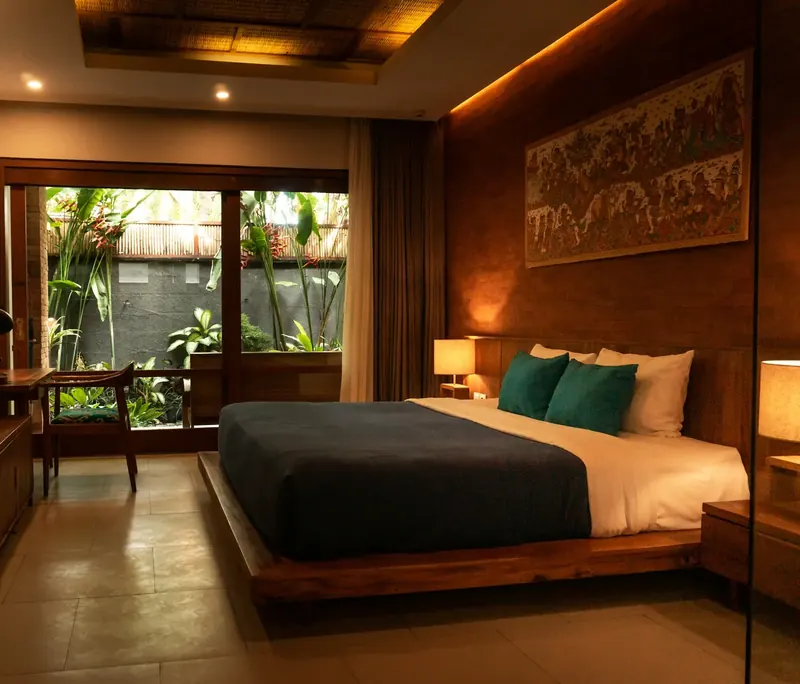
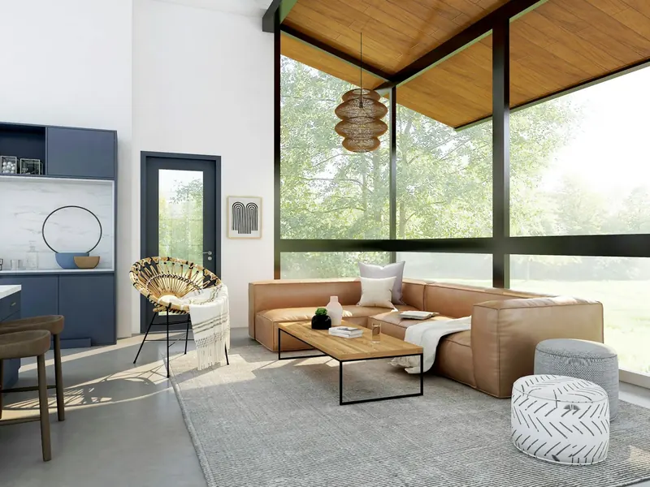
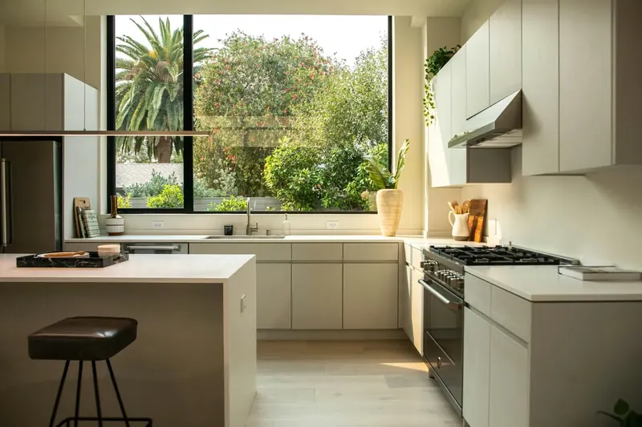
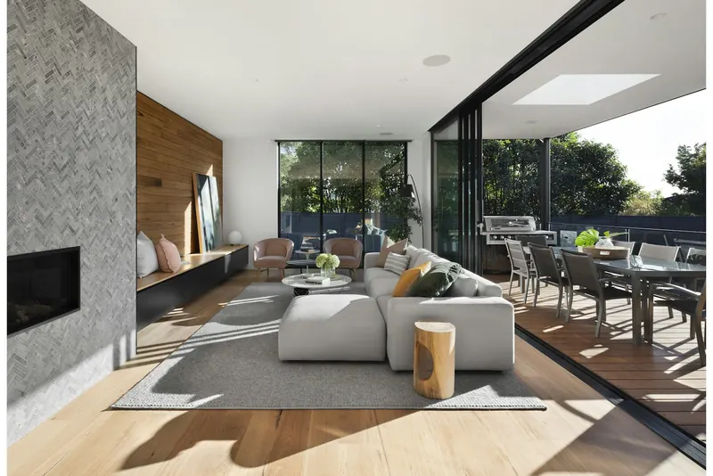
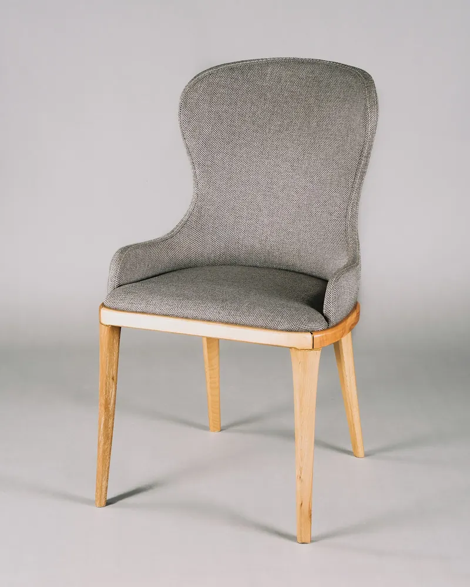

AtelierKambor
Interior studio · Phnom Penh
Homes, shophouses, cafés and small hotels, designed for heat, rain and family life.
The studio
We are a small studio in Boeung Keng Kang, started by a Khmer designer who trained abroad and came home. We design rooms for the way people here actually live: heat, rain, family, shoes at the door.
- Five kinds of project
Homes, shophouses, hospitality, renovations and furniture.
- Khmer and English
In meetings, on site, and on every drawing and quote.
- Phnom Penh first
Siem Reap and Kampot regularly. Further away, ask us.
- Itemised quotes
No hidden commissions from suppliers, ever.

Featured project · Homes · Toul KorkHouse in Toul KorkThree generations, one planted court, five rooms that stay cool without the air-con on all day.Walk through the houseSelected projects
Recentwork
Houses, a shophouse, guest rooms and a coffee room. Every project on this site is invented.

House in Toul Kork

Shophouse in Daun Penh

Flat by the river

Guest rooms in Kampot
What we design
Fivekinds of room
One room or a whole building. If you only need furniture, or one consultation at home, that is fine too.
How a project runs
From the firstvisit to the keys
Six stages, each with something you can hold. Fees are fixed after the first visit and paid in stages. The full process
- 01First talk and site visit
Notes from the visit and a fixed design fee in writing.
Free, about an hour - 02Concept
Mood boards, a layout plan and a first idea of cost.
Usually two to three weeks - 03Design development
Drawings, 3D views and a materials board.
Usually three to six weeks - 04Build drawings and quotes
A full drawing set and itemised contractor quotes.
One to three weeks - 05Site and build
Weekly site visits and photo updates.
A few weeks for a room, a few months for a house - 06Handover and styling
A snag list, a final walk-through and a care guide.
The last week
Journal
Notes onheat and materials
Short notes from the studio and the workshop.

Climate · Hot season noteKeeping a house cool without more air-conShade, moving air and walls that breathe do most of the work. The air conditioner is the last tool, not the first.
- Materials · Dry season noteHow terrazzo is poured on site
Chips of stone, grey or white cement, water and patience. Why we pour it in the dry months, and why it lasts.

Workshop · Rainy season noteA morning at the joinery workshopWhere our furniture is made, what dry wood means in a wet country, and why we oil and never lacquer.